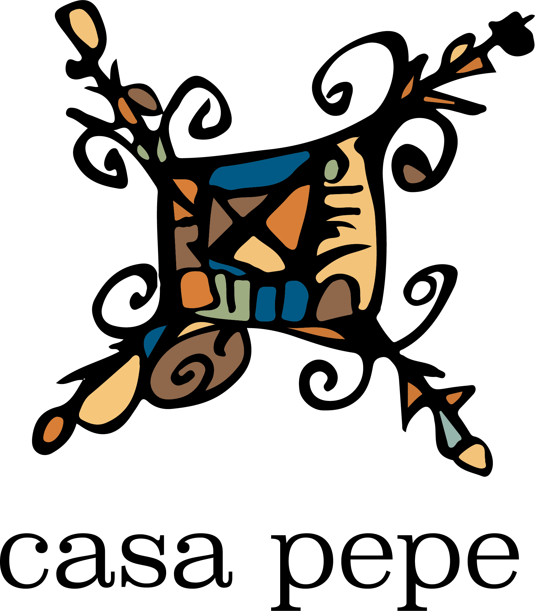

En la Ciudad de México, siendo las 10:16 horas del día 6 de octubre de 2026, se reunieron —de forma mixta, presencial en el domicilio social y por medios de comunicación a distancia (videoconferencia), en términos de los estatutos sociales y de los artículos 178 y 180 de la Ley General de Sociedades Mercantiles (la «LGSM»)— los accionistas de Hostal Boutique República de Uruguay, S.A. de C.V. (la «Sociedad»), sociedad constituida mediante la escritura pública número 35,380, de fecha 6 de junio de 2017, otorgada ante el Lic. Luis Eduardo Paredes Sánchez, titular de la Notaría número 180 de la Ciudad de México, a efecto de celebrar la presente Asamblea General Ordinaria y Extraordinaria de Accionistas.
Convocatoria. La Asamblea fue convocada mediante notificación por correo electrónico a los accionistas el 14 de septiembre de 2026, con más de quince (15) días naturales de antelación, en los términos de los estatutos sociales y del artículo 186 de la LGSM. Habiéndose cumplido los plazos y formalidades de ley y encontrándose representado el capital social con derecho a voto conforme a la lista de asistencia, la Asamblea se tiene por legalmente reunida.
Mesa de debates. Preside la Asamblea Javier Puente García, en su carácter de Presidente del Consejo de Administración, y actúa como Secretario Juan José Cué de la Fuente. El Presidente designa como escrutador a Estanislao Masiá Gismero, quien procede a formular la lista de asistencia.
Formulada la lista de asistencia, se hace constar el cuadro accionario vigente al inicio de la Asamblea (resultante de las asambleas de enero de 2026), representado por 69,720 acciones, así como la identificación, domicilio y asistencia de cada accionista:
| Accionista | Representante | RFC / ID | Acc. | % | Asist. |
|---|---|---|---|---|---|
| El Pontigu, S.A. de C.V. | Javier Puente García | PON1512141H6 | 19,411 | 27.84% | Sí |
| PITAO, S.A.P.I. de C.V. | Jorge I. Sastre Cabrerizo | PIT171113221 | 15,539 | 22.29% | Sí |
| Aldo Gelover Escamilla | Por propio derecho | GEEA840602461 | 14,416 | 20.68% | Sí |
| Starseeker, S.L.U. | Joaquín Canals García | L-718498-C | 8,907 | 12.78% | No |
| AE Future, S.A. de C.V. | Estanislao Masiá Gismero | AFU190516FJA | 8,061 | 11.56% | Sí |
| Struchture Inmoconstrucciones, S. de R.L. de C.V. | Javier Puente García | SIN190322567 | 3,386 | 4.86% | Sí |
| Total | 69,720 | 100% |
Quórum. Verificado que se encuentra representado el 87.22% del capital social con derecho a voto —porcentaje superior al mínimo exigido por los estatutos y por los artículos 190 y 191 de la LGSM para la válida instalación en primera convocatoria de una asamblea de carácter extraordinario—, el Presidente declara la Asamblea legalmente instalada.
Comparece asimismo, por su propio derecho, el ciudadano Jorge León Manzanilla Cañizares (CURP MACJ820218HDFNXR03, con domicilio en C. Correspondencia 153, int. 103, Col. Álamos, C.P. 03400, Benito Juárez, Ciudad de México), quien a su vez es socio de los vehículos El Pontigu, S.A. de C.V. y Struchture Inmoconstrucciones, S. de R.L. de C.V., y que mediante los acuerdos de la presente Asamblea (punto 9) pasa a ser accionista directo de la Sociedad.
Orden del día. Reconocimiento y ratificación de los acuerdos de las asambleas de Salida de Grupo Descansería y de Dilución y Reconocimiento de Acciones, así como de los contratos firmados.
Propuesta. El Presidente hace constar que en enero de 2026 se celebraron dos Asambleas Generales de Accionistas, firmadas por los socios (DocuSign Envelope ID 6BF91077-1727-42C5-B0CE-B02D8436DAD3) y pendientes de protocolización, cuyos acuerdos se ponen a ratificación:
A) Asamblea del 4 de enero de 2026 — Salida de Grupo Descansería. «Grupo Descansería», S.A. de C.V. (socio institucional de Puebla), representada por Ricardo Coghlan Parra, vende la totalidad de sus 2,561 acciones al resto de accionistas a $1.00 por acción, repartidas proporcionalmente (El Pontigu 735, PITAO 550, Aldo Gelover 515, Joaquín Canals 338, AE Future 286 y Struchture 137), mediante Contratos de Compraventa de Acciones de la misma fecha.
B) Asamblea del 5 de enero de 2026 — Diluciones y Reconocimiento de Acciones. (i) Aportaciones a prima (valor nominal $1.00, excedente a prima, sin emisión de nuevas acciones): AE Future $355,109; El Pontigu $911,848; PITAO $683,134; Aldo Gelover $637,992; Joaquín Canals $418,307, correspondientes a la aportación extraordinaria de junio 2024 cuando Grupo Presidente decidió no seguir aportando. (ii) Reconocimiento y capitalización de AFAC con emisión de acciones a $500.00 por acción: Aldo Gelover $421,674.34 → 843 acciones; AE Future $265,583.97 → 531; El Pontigu $27,816.59 → 56; PITAO $525,423.49 → 1,051 (Joaquín Canals no exhibió AFAC). (iii) Dilución de Struchture por incumplimiento en la exhibición de $450,000: cancelación de 242 acciones a $1,862.51 por acción. (iv) Compraventa de la totalidad de las acciones de Joaquín Canals García a favor de Starseeker, S.L.U. (15 de capital fijo + 234 Serie «A» + 104 Serie «B») por $3,384,645.00 M.N.
Orden del día. Presentación y aprobación del informe del Consejo de Administración y de los estados financieros de los ejercicios 2022, 2023, 2024 y 2025.
Propuesta. El Consejo de Administración presenta su informe de gestión y los estados financieros de los ejercicios 2022 a 2025, con el detalle de los resultados declarados fiscalmente:
| Ejercicio | Resultado declarado (fiscal) |
|---|---|
| 2022 | Pérdida fiscal de $1,556,851 |
| 2023 | Pérdida fiscal de $4,267,404 |
| 2024 | Pérdida fiscal de $17,813,117 |
| 2025 | Pérdida fiscal de $12,391,159 |
Orden del día. Presentación y aprobación del informe de resultados del ejercicio 2026 con cifras al 31 de agosto de 2026.
Antecedentes. Desde la entrada de Grupo Presidente en 2022 y la etapa de expansión, la Sociedad acumuló pérdidas crecientes (2022–2025) que la llevaron a una situación crítica, al borde de la quiebra: la Sociedad inició el ejercicio 2026 con una deuda del orden de $23 millones y una valuación prácticamente nula, al punto de que las salidas de capital se instrumentaron a un valor de $1.00 por acción. La salida de Grupo Descansería (Grupo Presidente) y el cierre del portafolio de Sayulita son las dos decisiones que permiten a la Sociedad aliviar la estructura de costos y encaminarse al punto de equilibrio.
Cifras al 31 de agosto de 2026. Ingresos acumulados de aproximadamente $14.2 millones ($14,227,633). A nivel de propiedad, la operación se sostiene prácticamente en equilibrio: CDMX en terreno positivo (≈ +$22 mil) y Puebla igualmente positiva (≈ +$3 mil); las pérdidas se concentran en Corporativo (≈ −$250 mil) y en la salida de Sayulita (≈ −$1.9 millones).
Lectura. La tendencia confirma la primera etapa del proceso de refundación 2026–2027 —estabilización operativa, recuperación de márgenes departamentales y contención de la pérdida mensual—. De sostenerse, 2026 sería el primer ejercicio en utilidades desde 2022 (estimación de cierre del orden de +$1.98 millones). La Sociedad continúa en una situación delicada, si bien notablemente mejor que el ejercicio anterior.
Orden del día. Cancelación del Pacto de Socios vigente.
Propuesta. Con motivo del proceso de refundación y de la adopción del nuevo Pacto de Socios 2026, se propone cancelar y dejar sin efecto el Convenio de Accionistas / Pacto de Socios firmado en octubre de 2022, cuyo contenido quedó superado por la nueva estructura de capital, gobierno y reglas de salida.
Orden del día. Presentación del Proyecto Casa Pepe Remodelación y de las operaciones de financiamiento, reestructura societaria y saneamiento fiscal asociadas.
Propuesta. Se presenta el Proyecto de Remodelación y refundación de Casa Pepe, articulado en tres líneas de acción:
a) Búsqueda de accionista para una emisión futura de acciones. Incorporación de un nuevo accionista mediante emisión futura de acciones a una valuación de $44.3 millones y una captación de $11.15 millones, orientada a remodelar la propiedad de Ciudad de México, convertir el hostal en hotel y regresar a utilidades del orden de $6 millones, acelerando el payback de la recompra aun cuando implique dilución.
b) Creación de una sociedad nueva para la touroperadora Sincrético. Constitución de una sociedad independiente para Sincrético, con un valor de $4 millones y una captación de $1.75 millones por el 45%, con la cesión de las marcas y el software de Sincrético a la nueva sociedad.
c) Cesión de facturas a la propiedad CDMX y saneamiento fiscal. Cesión de facturas a la propiedad CDMX por un valor superior a $30 millones y la pérdida fiscal asociada, para la compensación de la deuda de renta; búsqueda de un comprador para el inmueble y reducción de la renta.
Orden del día. Aumento del capital social en su parte variable mediante la emisión de acciones Serie «B» y Serie «D», y suscripción de las mismas.
Propuesta. Con motivo de la necesidad de subsanar las deudas derivadas de los ejercicios anteriores y de dotar a la Sociedad de los recursos necesarios para su saneamiento y refundación, se propone un aumento del capital social en su parte variable. Reconociendo que las 69,720 acciones existentes representan el 20% del capital resultante, que la Serie «D» representa otro 20% y que la emisión de capital (Serie «B») representa el 60% restante, el valor de la Sociedad (post-money) se fija en $7,545,833.00 M.N., lo que determina un precio de suscripción de $21.65 por acción (acciones nominativas, sin expresión de valor nominal). En consecuencia, se emiten 278,880 acciones nuevas, divididas en 209,160 acciones Serie «B» por $4,527,500.00 M.N. y 69,720 acciones Serie «D» por $1,509,167.00 M.N. (esta última conforme al punto 8). En el mismo acto, los siguientes accionistas solicitan y suscriben, conforme a su derecho de preferencia, las acciones Serie «B» que se indican:
| Suscriptor | Aportación | Acciones | Concepto |
|---|---|---|---|
| Juan José Cué de la Fuente | $1,562,500 | 72,184 | Efectivo + deuda |
| PITAO, S.A.P.I. de C.V. | $517,500 | 23,907 | Contra deuda |
| Luis Javier Cué de la Fuente | $500,000 | 23,099 | Efectivo |
| AE Future, S.A. de C.V. | $187,500 | 8,662 | Contra deuda |
| Jorge León Manzanilla Cañizares | $110,000 | 5,082 | Deuda (contadores) |
| Subtotal suscrito | $2,877,500 | 132,934 | |
| Tesorería · AFAC Serie «B» (pendiente) | $1,650,000 | 76,226 | Futuros aumentos |
| Tesorería · Serie «D» (J. Puente) | $1,509,167 | 69,720 | Quita / vesting |
| Total emisión | $6,036,667 | 278,880 |
Capital social. Se hace constar que el capital social de la Sociedad al inicio de la presente Asamblea, al cierre de las asambleas del 5 de enero de 2026, asciende a $30,004,514.06 M.N., integrado por las aportaciones de El Pontigu, S.A. de C.V. ($7,378,290), PITAO, S.A.P.I. de C.V. ($6,034,057), Aldo Gelover Escamilla ($5,579,666), AE Future, S.A. de C.V. ($3,128,193), Starseeker, S.L.U. ($3,384,307) y Struchture Inmoconstrucciones, S. de R.L. de C.V. ($4,500,000). Con el aumento aprobado en este punto por $6,036,667.00 M.N. (Serie «B» $4,527,500.00 + Serie «D» $1,509,167.00), el capital social de la Sociedad tras la ampliación asciende a $36,041,181.06 M.N.
Orden del día. Emisión de la Serie «D» en Tesorería a favor de Javier Puente García, como reconocimiento del ahorro generado en la reducción de la deuda de la Sociedad.
Propuesta. Como motivo del ahorro que se está generando en la reducción de la deuda de la Sociedad, se hace constar que durante los ejercicios 2026 y 2027 se han generado ahorros en el pasivo de la Sociedad —concretamente, en la negociación con la banca se lleva a la fecha un ahorro del orden de $5,500,000.00 M.N.—, conducidos por Javier Puente García. En reconocimiento de dicho ahorro (quita), se emiten 69,720 acciones Serie «D» por $1,509,167.00 M.N. (equivalentes al 20% del capital resultante, al precio de la ronda de $21.65), que quedan en Tesorería a favor de Javier Puente García. La suscripción de estas acciones y el reconocimiento de su exhibición se realizarán conforme se acredite la quita, en una asamblea posterior.
Orden del día. Compraventa, a favor de Jorge León Manzanilla Cañizares y de AE Future, S.A. de C.V., de las acciones de la Sociedad que les corresponden por su participación en los vehículos El Pontigu, S.A. de C.V. y Struchture Inmoconstrucciones, S. de R.L. de C.V., para pasar a ser accionistas directos.
Propuesta. Se hace constar que Jorge León Manzanilla Cañizares participa indirectamente en la Sociedad a través de El Pontigu, S.A. de C.V. y de Struchture Inmoconstrucciones, S. de R.L. de C.V., y que AE Future, S.A. de C.V. (Estanislao Masiá Gismero) participa indirectamente a través de El Pontigu. Para convertir esa participación indirecta en tenencia directa se instrumenta una compraventa de acciones de la Sociedad, bajo las siguientes reglas:
El resultado en la Sociedad es el siguiente:
| Adquirente | Vía El Pontigu | Vía Struchture | Acciones directas |
|---|---|---|---|
| Jorge León Manzanilla Cañizares | 895 | 365 | 1,260 |
| AE Future, S.A. de C.V. (Estanislao Masiá) | 619 | — | 619 |
| Total vendido | 1,514 | 365 | 1,879 |
Con ello, El Pontigu reduce su tenencia de 19,411 a 17,897 acciones y Struchture de 3,386 a 3,021 acciones. Se hace constar, para claridad, que en las asambleas respectivas de El Pontigu y de Struchture cada vehículo recomprará a Jorge Manzanilla y a AE Future las acciones que estos tienen en dichos vehículos, las cuales pasarán a la tesorería de cada vehículo; esos actos corresponden a la esfera interna de cada sociedad y no a la presente Asamblea.
Orden del día. Modificación en la integración del Órgano de Administración y designación de sus miembros.
Propuesta. Se propone sustituir el régimen anterior por un Consejo de Administración integrado por seis (6) consejeros propietarios, conforme al nuevo Pacto de Socios 2026, incorporando a Jorge León Manzanilla Cañizares como Vocal:
| Cargo | Consejero |
|---|---|
| Presidente | Javier Puente García |
| Consejero | Juan José Cué de la Fuente |
| Consejero | Luis Javier Cué de la Fuente |
| Consejero | Jorge Ignacio Sastre Cabrerizo (PITAO) |
| Consejero | Estanislao Masiá Gismero (AE Future) |
| Vocal | Jorge León Manzanilla Cañizares |
Orden del día. Reconocimiento y capitalización de las aportaciones efectivamente exhibidas y de la deuda que se reconoce como aportación de capital; instrucción de los ajustes contables.
Propuesta. Se reconoce que a la fecha han sido efectivamente aportadas y exhibidas a la Sociedad las siguientes cantidades, que se tienen por suscritas y pagadas: Juan José Cué de la Fuente $1,150,000 (quedando pendiente por exhibir $412,500 de su suscripción total) y Luis Javier Cué de la Fuente $500,000. Asimismo, se solicita realizar los ajustes contables correspondientes para que la deuda de $110,000 a favor de los servicios de contabilidad ofrecidos por Jorge León Manzanilla Cañizares pase a ser reconocida como aportación de capital.
Orden del día. Aprobación del Pacto de Socios 2026, que sustituye al convenio cancelado en el punto 5.
Propuesta. Se propone la adopción del nuevo Pacto de Socios 2026, cuyas materias principales son: Consejo de Administración de seis miembros; series «A», «B» y «D» con iguales derechos salvo el vesting de la «D»; mayorías reforzadas (66%) y veto por deuda (25%); derecho de preferencia, tag-along (15%) y drag-along (mes 60); y el mecanismo de recompra de los Socios Adheridos (Cláusula IX).
Recompra de Socios Adheridos. Se acogen a la recompra (hasta el 100% de su capital exhibido, sin interés), fondeada con el 25% de los dividendos más el porcentaje de la tenencia saliente del flujo de caja libre, a partir del ejercicio 2027: Aldo Gelover Escamilla (100%), Starseeker, S.L.U. (100%), los socios salientes de Struchture Inmoconstrucciones y los socios salientes de El Pontigu, S.A. de C.V. En El Pontigu permanecen Javier Puente García, Óscar Gerardo Reyes González y Pablo Borchi Klapp; Jorge León Manzanilla Cañizares y la parte de AE Future pasan a tenencia directa (punto 9) y no se recompran. PITAO y AE Future permanecen en la Sociedad.
Ajuste del Anexo B. Del monto a recomprar se descuentan las participaciones que pasan a directo: Jorge León Manzanilla Cañizares $1,000,000 (El Pontigu $500,000 + Struchture $500,000) y AE Future / Estanislao Masiá $240,000 (El Pontigu), esto es $1,240,000.00 M.N. menos respecto del Anexo B previo.
Orden del día. Otorgamiento de poderes para la administración y representación de la Sociedad.
Propuesta. Se propone otorgar poderes a favor de Juan José Cué de la Fuente para actos de administración, pleitos y cobranzas y actos de dominio acotados, sin facultad para contraer deuda ni otorgar garantías sin acuerdo del Consejo, en los términos del Pacto de Socios 2026.
Orden del día. Determinación del cuadro accionario resultante y actualización del Libro de Registro de Acciones.
Propuesta. Con el aumento de capital (punto 7), el reconocimiento de la Serie «D» (punto 8), las conversiones (punto 9) y las diluciones, se determina el cuadro accionario resultante, representado por 348,600 acciones. Las acciones en Tesorería (AFAC y Serie «D») no computan para el capital con derecho a voto (202,654 acciones con voto) hasta su suscripción y pago:
| Accionista | Acciones | % del capital | % con voto |
|---|---|---|---|
| Juan José Cué de la Fuente | 72,184 | 20.71% | 35.62% |
| PITAO, S.A.P.I. de C.V. | 39,446 | 11.32% | 19.46% |
| Luis Javier Cué de la Fuente | 23,099 | 6.63% | 11.40% |
| El Pontigu, S.A. de C.V. | 17,897 | 5.13% | 8.83% |
| AE Future, S.A. de C.V. | 17,342 | 4.97% | 8.56% |
| Aldo Gelover Escamilla | 14,416 | 4.14% | 7.11% |
| Starseeker, S.L.U. | 8,907 | 2.56% | 4.40% |
| Jorge León Manzanilla Cañizares | 6,342 | 1.82% | 3.13% |
| Struchture Inmoconstrucciones | 3,021 | 0.87% | 1.49% |
| Tesorería · AFAC (sin voto) | 76,226 | 21.87% | — |
| Tesorería · Serie «D» – J. Puente (sin voto) | 69,720 | 20.00% | — |
| Total | 348,600 | 100.00% | 100% (202,654 c/voto) |
Orden del día. Designación de delegado especial para protocolizar el acta, y redacción, lectura y aprobación de la misma.
Propuesta. Se propone facultar a Javier Puente García y/o a Juan José Cué de la Fuente como delegados especiales para acudir ante fedatario público a formalizar y protocolizar los acuerdos adoptados y realizar los actos necesarios para su inscripción ante el Registro Público de Comercio.
No habiendo otro asunto que tratar, se levanta la sesión siendo las 12:05 horas del día de su fecha, firmando al calce quienes en ella intervinieron.
Que comparecen a la celebración del presente Pacto de Socios (el «Pacto»), por propio derecho o debidamente representados, los siguientes accionistas de Hostal Boutique República de Uruguay, S.A. de C.V. (la «Sociedad»):
A) Personas morales
B) Personas físicas, por propio derecho
C) Compareciente no accionista
Los comparecientes manifiestan que son la totalidad de los accionistas de la Sociedad con acciones suscritas, conforme a la Asamblea General Ordinaria y Extraordinaria de Accionistas de octubre de 2026 (la «Asamblea de Refundación»), cuyo cuadro accionario resultante se acompaña como Anexo A.
Reconocen que el capital resultante asciende a 348,600 acciones, de las cuales 69,720 corresponden a la Serie «D» emitida en Tesorería por el reconocimiento del ahorro en la reducción de la deuda (20% del capital), y 76,226 acciones Serie «B» de aportaciones para futuros aumentos (AFAC) permanecen en Tesorería pendientes de suscribir; por lo que los comparecientes representan la totalidad del capital efectivamente suscrito y con derecho a voto (202,654 acciones), y no los bloques en Tesorería, que no votan ni cobran dividendo mientras no se suscriban.
Existe un Pacto de Socios anterior, de octubre de 2022, que las partes dan por terminado, quedando el presente como el único vigente.
El presente Pacto es un acto jurídico independiente y autónomo, que regula las relaciones entre los accionistas bajo la estructura accionarial, de gobierno y de gestión vigente, y obliga únicamente a las partes firmantes.
1.1 Integración. La Sociedad contará con un Consejo de Administración integrado por seis (6) Consejeros, cada uno con su respectivo suplente designado bajo el mismo criterio:
A la fecha de firma, el Consejo queda integrado por: Javier Puente García (Presidente), Juan José Cué de la Fuente, Luis Javier Cué de la Fuente, Jorge Ignacio Sastre Cabrerizo (PITAO), Estanislao Masiá Gismero (AE Future) y Jorge León Manzanilla Cañizares (Vocal).
1.2 Designación y duración. Los Consejeros durarán dos (2) años y podrán ser reelectos. Cada grupo con derecho de designación lo ejercerá dentro de los treinta (30) días naturales siguientes a la vacante; transcurrido ese plazo, el nombramiento lo hará la Asamblea por mayoría simple.
1.3 Quórum y votación. El Consejo sesionará válidamente con al menos tres (3) Consejeros o sus suplentes, y resolverá por mayoría de los presentes; en caso de empate, el Presidente tendrá voto de calidad. Las sesiones podrán ser por medios electrónicos.
1.4 Pérdida de derechos de designación. Si Javier Puente García deja de ser accionista, directa o indirectamente a través de El Pontigu o de Struchture, perderá el derecho a la Presidencia. Si la familia Cué de la Fuente reduce su participación conjunta por debajo del 20%, perderá su derecho reservado de designación. En cualquiera de esos supuestos, los Consejeros se designarán por mayoría simple conforme a la tenencia accionaria.
1.5 Facultades. El Consejo es el órgano colegiado de supervisión estratégica y de las decisiones que este Pacto le reserva.
2.1 Estructura. El capital social está representado por acciones nominativas, sin expresión de valor nominal, divididas en Series «A», «B» y «D». La parte fija está representada por acciones Serie «A» y la variable por Series «B» y «D».
2.2 Igualdad de derechos. Salvo por lo previsto para la Serie «D» en materia de Tesorería y suscripción diferida, todas las acciones confieren los mismos derechos corporativos, patrimoniales y económicos: voto pleno; participación proporcional en utilidades, dividendos, reembolsos y amortizaciones; participación en aumentos y reducciones de capital; y derecho de preferencia.
2.3 Aumento de capital de la Ronda de Refundación. Los accionistas reconocen que la Asamblea de Refundación aprobó, reconociendo que las 69,720 acciones existentes representan el 20% del capital resultante, un aumento con un valor de la Sociedad (post-money) de $7,545,833.00 M.N. y un precio de suscripción de $21.65 por acción, mediante la emisión de 278,880 acciones nuevas: 209,160 Serie «B» por $4,527,500.00 M.N. y 69,720 Serie «D» por $1,509,167.00 M.N. De la Serie «B» se suscribieron 132,934 acciones por $2,877,500.00 (Juan José Cué $1,562,500; PITAO $517,500; Luis Javier Cué $500,000; AE Future $187,500; Jorge L. Manzanilla $110,000) y el remanente de 76,226 acciones ($1,650,000, AFAC) quedó en Tesorería.
2.4 Bloques en Tesorería. Las acciones Serie «B» de AFAC (76,226) y las acciones Serie «D» (69,720) no tienen titular con derechos a la fecha de firma; no votan, no cobran dividendo y no computan para las mayorías de este Pacto mientras permanezcan en Tesorería. Su suscripción se ofrecerá conforme al orden de preferencia del apartado 3.11 y, una vez suscritas, sus titulares quedarán adheridos a este Pacto.
3.1 Objeto. La Serie «D» remunera un resultado medible a favor de la Sociedad, conseguido por la gestión de Javier Puente García. No es un premio por permanencia ni por el transcurso del tiempo. El resultado que la origina es, de forma alternativa o acumulativa: (a) el ahorro efectivo en la reducción de la deuda de la Sociedad logrado en la negociación con los acreedores; y (b) la captación de inversión para empresas subsidiarias (por ejemplo, Sincrético) que sufrague costos de la operación de Casa Pepe y, con ello, genere un ahorro en los gastos de la Sociedad. Se emite en la proporción que ese ahorro o captación represente.
3.2 Definición del ahorro. Se entiende por «ahorro»: (a) la reducción efectiva del pasivo de la Sociedad respecto del saldo al 31 de diciembre de 2025 —que comprende un ahorro con la banca del orden de $5,500,000.00 M.N. conseguido durante los ejercicios 2026 y 2027—; y (b) el monto de la captación de nueva inversión a una subsidiaria que se destine a cubrir gastos de la operación (no inversión) y genere un ahorro equivalente en los gastos de la Sociedad.
3.3 El reconocimiento. Se reconoce a favor de Javier Puente García un importe equivalente al quince por ciento (15%) del ahorro de deuda generado más el total de la captación del apartado 3.2(b). Dicho importe compra acciones Serie «D» al precio de la ronda ($21.65 por acción). Conforme al ahorro reconocido a la fecha, se emiten 69,720 acciones Serie «D» —equivalentes al 20% del capital resultante— por $1,509,167.00 M.N., que permanecen en Tesorería. (Ejemplo: por una reducción de deuda de $10,000,000, el 15% equivale a $1,500,000 de reconocimiento.)
3.4 Suscripción, medición y tope. La suscripción de la Serie «D» y el reconocimiento de su exhibición se realizarán conforme se acredite el ahorro/quita, mediante acta del Consejo apoyada en los estados financieros dictaminados (Cláusula X). El reconocimiento no podrá exceder del veinte por ciento (20%) del capital resultante. La medición se practicará anualmente, y el remanente no suscrito en Tesorería se cancelará el 31 de diciembre de 2028, o al cancelarse este Pacto y emitirse uno nuevo por la entrada de un nuevo socio.
3.5 Antecedente. Las Partes reconocen que en enero de 2026 se promovió un acuerdo a dos años para reducir la deuda mediante una aportación por el 25% del capital. Dado que la negociación y la remodelación permiten una mejor solución y una nueva valuación antes, este mecanismo lo sustituye.
3.6 Situación en Tesorería y derechos. Mientras permanezcan en Tesorería, las acciones Serie «D» no generan derechos económicos exigibles ni se consideran efectivamente suscritas. Una vez suscritas, otorgan los mismos derechos que las Series «A» y «B».
3.13 Naturaleza del ajuste. Las Partes reconocen que este mecanismo es condicionado, variable y sujeto a reducción automática en función del resultado efectivo de la negociación de la deuda.
4.1 Mayoría reforzada (66%). Requieren el voto favorable de accionistas que representen al menos el sesenta y seis por ciento (66%) del capital con derecho a voto, excluidas las acciones en Tesorería: aumentos de capital o emisión de valores convertibles y la supresión del derecho de preferencia (salvo las emisiones de Serie «D» de la Cláusula III); reducciones, amortizaciones y recompras (salvo las de la Cláusula IX); creación de clases de acciones; fusión, escisión, transformación, disolución o liquidación; venta del 5% o más de los intangibles; y la modificación del presente Pacto.
4.2 Consejo (mayoría simple). La adquisición, venta o renta de inmuebles para nuevas aperturas y la terminación de contratos relevantes; los financiamientos con costo superiores a $2,000,000.00 individual o acumulado; la adquisición o cesión de propiedad intelectual; y la determinación de un pago crítico.
4.3 Todo lo demás corresponde a la dirección y puede ejecutarse sin consulta previa.
Los accionistas propiciarán la mayor rentabilidad y desarrollo del negocio, con buena reputación y observancia de la ley.
Compromiso de enfoque operativo. Mientras no se cubra la totalidad de la recompra de los Socios Adheridos (Cláusula IX), los accionistas se comprometen a no invertir en nuevos proyectos de expansión, pero sí a aprovechar el valor de la marca y de los activos existentes, sin inversión y con cargo al presupuesto anual, para generar más ingresos. En concreto, se impulsará la remodelación ya reconocida en la Asamblea para elevar la utilidad de la propiedad de Ciudad de México de aproximadamente $1,500,000 a $6,000,000, lo que adelantará el pago a los socios. Los recursos de la operación se destinan a las propiedades de Ciudad de México y Puebla.
Litigios contra la Sociedad. El accionista que promueva un procedimiento en contra de la Sociedad tendrá suspendido su derecho a Consejo mientras dure, restituyéndose al dictarse sentencia firme.
6.1 Regla general. Ninguna venta a un tercero será válida sin agotar el procedimiento de notificación y oferta del apartado 6.3. Cualquier transmisión que lo incumpla será nula.
6.2 Transmisiones permitidas (sin derecho de preferencia): al cónyuge o parientes hasta el tercer grado; a sociedades controladas por el propio accionista (>51%); y las que deriven de la Cláusula IX. El adquirente deberá adherirse por escrito al Pacto.
6.3 Derecho de preferencia. El que pretenda enajenar notificará por escrito número y serie, adquirente, precio, forma de pago y oferta irrevocable a los demás, quienes podrán ejercer a prorrata en quince (15) días naturales; vencido el plazo, podrá transmitir a su adquirente dentro de sesenta (60) días naturales en condiciones no más favorables.
6.4 Tag-along. Si uno o varios accionistas pretenden transmitir a un tercero el 15% o más del capital, los demás podrán sumarse a prorrata en las mismas condiciones.
6.5 Drag-along. A partir del mes sesenta (60) siguiente a la firma, el accionista que reciba una oferta de buena fe por la totalidad del capital podrá obligar a los demás a vender, siempre que la oferta valore a la Sociedad en al menos veinte (20) veces el post-money de la ronda de refundación ($7,545,833.00 M.N.), esto es $150,916,660.00 M.N., correspondiendo a cada accionista el producto de su porcentaje por el valor ofertado.
6.6 Efectos. El Pacto obliga y beneficia a albaceas, representantes, herederos, sucesores y cesionarios autorizados.
7.1 La Asamblea decidirá si los herederos de un accionista persona física se incorporan, si lo solicitan dentro de noventa (90) días naturales de la adjudicación y se adhieren al Pacto; si no, tendrán un (1) año para encontrar tercero respetando la preferencia, y en su defecto la Sociedad podrá recomprar o amortizar al Precio de Salida por Falta de Acuerdo. 7.2 Durante el interinato las acciones conservan voto (albacea o representante). 7.3 El cambio de control o liquidación de un accionista persona moral se rige por 7.1. 7.4 Control: capacidad de imponer decisiones, nombrar a la mayoría de consejeros, mantener >50% o dirigir la estrategia.
8.1 Ante una imposibilidad de acuerdo, cualquier accionista podrá convocar con 7 a 14 días hábiles; si el notificado no comparece dos veces o el asunto no se resuelve en 20 días hábiles, se actualiza la «Imposibilidad de Acuerdo». 8.2 Actualizada, la minoría podrá vender a la mayoría y la mayoría comprar a la minoría, a prorrata y al Precio de Salida por Falta de Acuerdo. 8.3 Precio de Salida por Falta de Acuerdo: el mayor de (i) la valuación independiente por firma de prestigio designada por el Consejo, o (ii) el capital efectivamente exhibido, sin intereses.
9.1 Antecedentes. Derivado de la ronda family & friends de 2022 y de la pérdida de valor durante la expansión (2022–2025), se establece un mecanismo para que quien no desee continuar recupere su inversión sin bloquear la refundación de quienes sí continúan.
9.2 Socios Adheridos. Tienen derecho a recuperar el cien por ciento (100%) del capital efectivamente exhibido, sin intereses, los socios del Anexo B: Aldo Gelover Escamilla y Starseeker, S.L.U. (directos, 100%); los socios salientes de El Pontigu, S.A. de C.V. y los socios salientes de Struchture Inmoconstrucciones, S. de R.L. de C.V. En El Pontigu permanecen Javier Puente García, Óscar Gerardo Reyes González y Pablo Borchi Klapp; en Struchture permanecen Jorge Cejudo Heredia y Javier Puente García. Jorge León Manzanilla Cañizares y AE Future, S.A. de C.V. (por la participación de Estanislao Masiá) pasan a tenencia directa y NO se recompran. PITAO y AE Future permanecen en la Sociedad. El total a recomprar asciende a $15,993,897.00 M.N. (Anexo B).
9.3 Fondeo. A partir del ejercicio 2027, la recompra se fondea con los dividendos que corresponderían a los Socios Adheridos más un 25% adicional del flujo de caja libre que se detrae únicamente de los dividendos de Juan José Cué de la Fuente, Javier Puente García (El Pontigu y Struchture) y Luis Javier Cué de la Fuente. PITAO, S.A.P.I. de C.V. (Jordi Sastre) y AE Future, S.A. de C.V. (Estanislao Masiá) cobran sus dividendos de forma íntegra y no contribuyen al 25% adicional; las acciones que suscribieron en la ronda no incrementan su porcentaje, que se mantiene, pero cobran dividendo desde el primer reparto. El flujo con el que se contará para la recompra en los ejercicios venideros se presenta en el Anexo D.
9.4 Flujo de caja libre. El EBITDA consolidado de la Sociedad (operación hotelera, Sincrético, Puebla y, en su caso, los futuros hoteles que se incorporen al proyecto, menos corporativo) menos: (i) el ISR efectivamente causado; (ii) el servicio de la deuda con costo pagado (principal e intereses); y (iii) la reserva de caja operativa que apruebe el Consejo (máximo 15% del EBITDA).
9.5 Fecha de pago. Dentro de los 120 días naturales siguientes al cierre, una vez emitidos los estados dictaminados. El primer pago corresponde a 2027 y se cubre en 2028.
9.6 Asignación. El monto de cada ejercicio se reparte a prorrata, en proporción al capital pendiente de cada Socio Adherido, de modo que todos concluyan su recompra de manera simultánea. Conforme al modelo financiero vigente, la recompra se completa hacia el ejercicio 2033. A medida que un Socio Adherido quede cubierto, su parte se redistribuye entre los demás en la misma proporción. El pago se hace directamente a cada persona, no al vehículo; Daniel Guiot Vial, con posición en los dos vehículos, cuenta como una sola persona con dos saldos.
9.7 Compra directa y cancelación. HBR paga en efectivo al Socio Adherido; éste manifiesta por escrito el importe recibido y el número de acciones recompradas; y en paralelo se cancelan las acciones correspondientes (en HBR y en el vehículo), con la reducción de capital respectiva. Las acciones Serie «A» de los vehículos, de capital fijo, quedan a disposición de los socios que permanezcan.
9.7 bis Aprobaciones anticipadas. Los accionistas otorgan desde ahora su consentimiento a estos actos, renuncian al derecho de preferencia respecto de esas transmisiones y se obligan a votar a favor; las reducciones de capital quedan aprobadas y no requieren la mayoría reforzada del 4.1.
9.8 Verificación. Los Socios Adheridos podrán verificar el cálculo, con quince (15) días hábiles para la información soporte y, en su caso, un contador independiente distinto del que dictamina, a su costa.
9.9 Limitaciones e impugnación. Los Socios Adheridos conservan el derecho a impugnar el presente Pacto y a exigir el cumplimiento del reparto conforme a esta Cláusula. Sin embargo, no podrán ocupar cargos en el Consejo de Administración ni auditar las cuentas de la Sociedad, salvo que una auditoría externa o una sentencia firme acredite que los dividendos no se están repartiendo conforme a este acuerdo. Mientras ello no ocurra, el mecanismo de pago continúa sin interrupción, a fin de que la inconformidad de un Socio Adherido no frene el reparto a los demás. Conservan su derecho de voto e información mientras no se cancelen sus acciones.
9.10 Terminación. El mecanismo se extingue respecto de cada Socio Adherido cuando reciba la totalidad de su capital exhibido, y respecto de todos al cubrirse el último.
10.1–10.2 La información financiera y societaria se pondrá a disposición en la plataforma de reporte de la Sociedad (acceso individual ligado al correo del Anexo C): estados financieros dictaminados, cuadro accionario, actas, saldo y emisiones de Serie «D», y el estado del mecanismo de recompra (flujo de caja libre con su conciliación, importe pagado a cada Socio Adherido y saldo pendiente), así como el plan de recompra proyectado. 10.3 Despacho contable: Fralla, encabezado por Jorge León Manzanilla Cañizares, cuya doble condición las Partes reconocen y consienten. 10.4 La verificación del 9.8 se practica por profesional distinto de Fralla; el despacho no se designa ni remunera con el voto de quien participe en él.
La Sociedad tratará de reducir al máximo sus adeudos y se ceñirá al presupuesto aprobado; no obstante, se entiende que está abierta a las contingencias de la empresa y del mercado, dando siempre prioridad a la supervivencia y continuidad operativa de la Sociedad (por ejemplo, la reposición de equipo esencial). Mantendrá sus bienes e intangibles asegurados y en buen estado; conservará licencias y permisos; no realizará actividades ajenas a su objeto; y los accionistas podrán participar en otros negocios de hospedaje informándolo al Consejo y absteniéndose en votaciones que afecten al mercado en que concurran.
12.1 Causas: transmisión en contravención de la Cláusula VI; divulgación de información confidencial; uso indebido de propiedad intelectual; conducta dolosa con daño por sentencia firme; e incumplimiento no subsanado en 30 días naturales. 12.2 La rescisión la declara la Asamblea sin el voto del incumplidor. 12.3 Efectos: el incumplidor vende la totalidad de sus acciones a los demás, a prorrata, al Precio de Salida por Falta de Acuerdo con un descuento del 20%, en 90 días naturales.
Cada accionista declara capacidad legal plena, exigibilidad de sus obligaciones, no incumplimiento de ley o contrato, solvencia, licitud del origen de sus recursos y ausencia de conflicto.
Por escrito, por correo electrónico a la dirección del Anexo C, con acuse, surtiendo efectos el día hábil siguiente. Los plazos en días hábiles excluyen fines de semana y descansos; los naturales corren corridos.
15.1 Vigente mientras lo esté la Sociedad; termina para quien deje de ser accionista y queda vigente para los demás. 15.2 Responsabilidad máxima limitada al valor de las acciones (Precio de Salida por Falta de Acuerdo), salvo dolo o mala fe y la Cláusula XII. 15.4 Cesión sujeta a la Asamblea. 15.5 Modificaciones solo por acuerdo escrito con la mayoría reforzada del 4.1. 15.8 Cancelación de pactos anteriores, incluido el de octubre de 2022. 15.10 Ley aplicable y jurisdicción: LGSM y legislación mexicana; tribunales de la Ciudad de México; mediación previa ante el Centro de Justicia Alternativa (máximo 60 días naturales).
Cuadro resultante de la Asamblea de Refundación de octubre de 2026. Las acciones en Tesorería (AFAC Serie «B» y Serie «D») no votan ni cobran dividendo hasta su suscripción y pago.
| Accionista | Identificación | Acciones | % capital | % con voto |
|---|---|---|---|---|
| Juan José Cué de la Fuente | Pasaporte G27626252 | 72,184 | 20.71% | 35.62% |
| PITAO, S.A.P.I. de C.V. | PIT171113221 | 39,446 | 11.32% | 19.46% |
| Luis Javier Cué de la Fuente | Pasaporte G40389152 | 23,099 | 6.63% | 11.40% |
| El Pontigu, S.A. de C.V. | PON1512141H6 | 17,897 | 5.13% | 8.83% |
| AE Future, S.A. de C.V. | AFU190516FJA | 17,342 | 4.97% | 8.56% |
| Aldo Gelover Escamilla | GEEA840602461 | 14,416 | 4.14% | 7.11% |
| Starseeker, S.L.U. | L-718498-C | 8,907 | 2.56% | 4.40% |
| Jorge León Manzanilla Cañizares | CURP MACJ820218HDFNXR03 | 6,342 | 1.82% | 3.13% |
| Struchture Inmoconstrucciones, S. de R.L. de C.V. | SIN190322567 | 3,021 | 0.87% | 1.49% |
| Tesorería · AFAC Serie «B» (sin voto) | — | 76,226 | 21.87% | — |
| Tesorería · Serie «D» – Javier Puente García (sin voto) | — | 69,720 | 20.00% | — |
| Total | 348,600 | 100.00% | 100% (202,654 con voto) |
Capital social: inicial (al cierre del 5-ene-2026) $30,004,514 → final tras el aumento $36,041,181.
Socios que manifestaron su voluntad de acogerse a la recompra de su capital efectivamente exhibido. El pago se hace directamente a cada persona, a prorrata en proporción al capital pendiente, de modo que todos concluyan su recompra de manera simultánea. No participan Jorge León Manzanilla Cañizares ni AE Future, S.A. de C.V. (Estanislao Masiá), por pasar a tenencia directa.
A) Socios directos de HBR
| Socio | Vía | Capital a recomprar |
|---|---|---|
| Aldo Gelover Escamilla | Directo (100%) | $5,579,666 |
| Starseeker, S.L.U. — Joaquín Canals García | Directo (100%) | $3,384,307 |
| Subtotal directos | $8,963,973 |
B) Socios salientes a través de El Pontigu, S.A. de C.V.
| Socio | Capital a recomprar |
|---|---|
| Ángel Álvarez Cadavieco | $500,000 |
| Pedro Miguel Casado | $500,000 |
| Nabori Medina Berrios | $500,000 |
| Daniel Guiot Vial | $500,000 |
| Marcos Robledo Gómez | $320,000 |
| Avelino Fernández García | $209,924 |
| Esther Calvé Mortes | $200,000 |
| Sandra Luz Sierra Arellano | $200,000 |
| Mónica Franco Mendoza | $100,000 |
| Subtotal El Pontigu | $3,029,924 |
C) Socios salientes a través de Struchture Inmoconstrucciones, S. de R.L. de C.V.
| Socio | Capital a recomprar |
|---|---|
| Pedro Pablo González Aguirregomezcorta | $500,000 |
| Alejandra Clausell Narro | $500,000 |
| Daniel Guiot Vial | $500,000 |
| Jaime Fernández-Villaverde Narvaiza | $500,000 |
| Carlos Ramón Vergara | $500,000 |
| Antonio Aguirregomezcorta | $500,000 |
| María del Mar Bosch Vega | $500,000 |
| Juan Pablo Santoveña Domenech | $250,000 |
| Francisco Santoveña Domenech | $250,000 |
| Subtotal Struchture | $4,000,000 |
Total Anexo B = $15,993,897. Daniel Guiot Vial figura en dos posiciones (El Pontigu $500,000 y Struchture $500,000): una sola persona, recompra total $1,000,000.
| Accionista | Correo |
|---|---|
| Juan José Cué de la Fuente | jjcue@yahoo.com |
| Luis Javier Cué de la Fuente | ljcue@elmuraldelospoblanos.com |
| PITAO, S.A.P.I. de C.V. · Jorge I. Sastre | jordisastre@nyxhotels.com |
| AE Future, S.A. de C.V. · Estanislao Masiá | estanis@casapepe.mx |
| Aldo Gelover Escamilla | [a confirmar] |
| El Pontigu, S.A. de C.V. · Javier Puente | javi@casapepe.mx |
| Struchture Inmoconstrucciones · Javier Puente | javi@casapepe.mx |
| Jorge León Manzanilla Cañizares | jmanzanilla@fralla.mx |
| Javier Puente García (beneficiario Serie «D») | javi@casapepe.mx |
La recompra de la Cláusula IX se atiende con el resultado que genere la Sociedad. El ejercicio 2025, con la operación aún lastrada por la unidad de Sayulita, cerró con una pérdida de operación de aproximadamente $5,950,000 (resultado del ejercicio con otros ingresos de aproximadamente −$4,729,723), lo que justifica el apoyo financiero y las aportaciones realizadas en años anteriores; y el ejercicio 2026 —de nuevo en terreno positivo (+$1,285,747)— confirma la capacidad de la Sociedad de generar el flujo con el que se pagará a los Socios Adheridos. Toda reinversión que la Sociedad acuerde se hará con base en esta cuenta de resultados, no al margen de ella.
Las cifras son consolidadas (Ciudad de México, Puebla y corporativo). El ejercicio 2025 incluye además el efecto de la unidad de Sayulita. En 2026, octubre y los meses subsecuentes se reflejan como proyección, por haberse celebrado la Asamblea el 7 de octubre de 2026. Pesos mexicanos (M.N.).
| Concepto | 2025 | 2026 |
|---|---|---|
| Ingresos | ||
| Hospedaje | 25,194,464 | 17,642,084 |
| Alimentos y bebidas | 5,292,814 | 3,837,213 |
| Touroperadora / Experiencias | 2,452,434 | 1,238,623 |
| Otros ingresos de hospedaje | 187,029 | 135,997 |
| Otros ingresos diversos | 58,892 | 83,324 |
| Total ingresos operativos | 33,185,633 | 22,937,241 |
| Costo de ventas | ||
| Costo de cuartos | 331,505 | 164,830 |
| Costo de alimentos y bebidas | 2,289,385 | 1,461,947 |
| Costo de tours | 127,019 | 177,996 |
| Costo de ventas · otros | 0 | 2,500 |
| Total costo de ventas | 2,747,909 | 1,807,273 |
| Utilidad bruta | 30,437,724 | 21,129,968 |
| Gastos de operación | ||
| Servicios de personal | 8,391,442 | 6,268,736 |
| Gastos de operación | 4,209,492 | 2,443,956 |
| Generales y administración | 6,704,498 | 4,213,529 |
| Mantenimiento | 1,377,937 | 815,699 |
| Publicidad, promoción y ventas | 123,742 | 192,894 |
| Agua, luz y combustible | 3,062,718 | 1,525,564 |
| Gastos de la propiedad (rentas) | 12,496,657 | 6,173,764 |
| Otros gastos | 21,300 | 2,656 |
| Total gastos de operación | 36,387,786 | 21,636,798 |
| Resultado de operación | (5,950,062) | (506,830) |
| Otros ingresos | 1,220,339 | 1,792,577 |
| Resultado del ejercicio (con otros ingresos) | (4,729,723) | 1,285,747 |
En señal de conformidad, las Partes firman el presente Pacto de Socios en la Ciudad de México, en la fecha del proemio.
gob_minutas (fecha, hora, quórum del 87.22%, los 15 puntos del orden del día con sus acuerdos, lista de asistencia y cuadro resultante) y gob_refundacion_compromisos (las 348,600 acciones, 202,654 con voto, y el precio de $21.65 por acción). Respaldos en gob_minutas_bak_20261123 y gob_refundacion_compromisos_bak_20261123. Queda pendiente el deck de socios (deck.html), que trae horneadas las cifras anteriores —precio de $22.19353 y otro reparto de suscripciones— y todavía no se ha regenerado desde esta acta. Y dos cifras del Pacto no coinciden con el modelo: el Anexo B suma $15,993,897 contra los $15,593,897 que usa el deck —la diferencia son $400,000 en Struchture, donde el Pacto reconoce $500,000 por socio y el libro de aportaciones registra $450,000 exhibidos (y $250,000 contra $225,000 en los Santoveña)—; y el piso del drag-along sube a $150,916,660 (20× el post-money de $7,545,833).